怎样用四个演化量描述受热、蒸发的三维液膜？
积分模型同时演化膜厚、两个方向的流量和表面温度。二维算例检验了近似精度，三维局部变薄则来自降阶模型预测。
文章目录
研究背景 · 为什么不能只用一条膜厚方程
薄膜比平板尺度薄得多，因此没有必要在每一步都用完整三维网格解析所有壁法向细节。最简的 Benney 型模型利用这一点，把流速、流量和温度都写成膜厚及其导数的即时函数，只剩一条膜厚演化方程。但这样做同时消除了流量和热场的独立调整时间：在惯性增强、热边界随时间改变时，表面形状变了，流量和表面温度不一定马上达到新的局部平衡。
WIBL（weighted-integral boundary-layer，加权积分边界层）采取中间路线：不再求每个高度的完整速度温度场，而保留其主要壁法向形状，让形状的幅值随时间变化。用厚度积分的守恒关系与闭合条件决定这些幅值。这比完整方程便宜，又比“所有量立即服从膜厚”的模型多保留了惯性、热弛豫与横向耦合。
本文新增的组合是：三维平面内输运 + 弱蒸发或凝结 + 简化二阶黏性修正 + 可随位置和时间变化的基底温度。它面向蒸汽腔等纯蒸汽环境中的相变液膜，而非直接针对开放空气中多组分液膜的扩散控制蒸发。
研究方法：物理对象与控制方程
几何、环境和边界
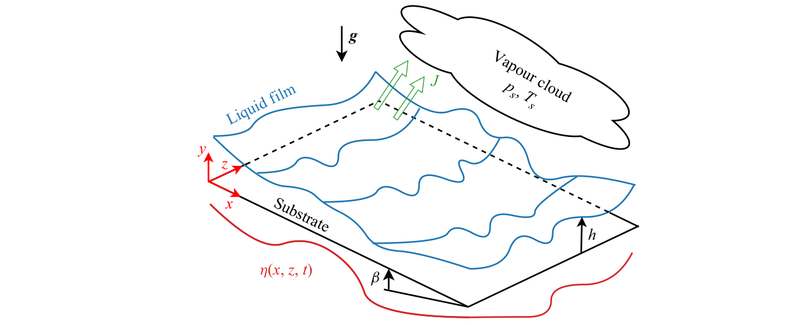
Figure 1｜模型的物理对象（第 4 页）
- 回答的问题： 论文究竟研究哪种液膜，外部控制作用在哪里？
- 图中证据或方法： x 沿斜面流向，z 为展向，y 为壁法向；膜厚为 h(x,z,t)，倾角 β 从水平基准计量，基底温度 η(x,z,t) 可变。界面与给定饱和温度、饱和压力的纯蒸汽交换质量 J。
- 支撑的结论： 壁温不仅改变热通量，还可经界面温度改变相变通量及热毛细应力，从而影响膜厚与流量。
- 局限与读图注意： 图中的蒸汽云是边界环境示意，不是本文求解的气相流场；气相机械和热状态被视为被动。不能由此声称模型包含空气侧扩散、气流剪切或蒸汽腔整体压力反馈。
液相采用不可压缩质量守恒、Navier–Stokes 动量方程和对流扩散能量方程。基底无滑移、不可穿透，并指定温度。自由表面包含质量损失的运动学条件、潜热及动能通量的热平衡、毛细压力、蒸汽反冲和温度梯度引起的切向应力。物性被视为常数，只有表面张力随温度线性变化。
重要的是，“full model”在这里指同一组相变闭合和被动气相假设下的完整液相方程，并不等于把现实装置所有物理过程都纳入的全物理模型。
三条最值得记住的关系
- 膜厚守恒（式 3.2）：在长波慢变量下，∂Th + ∂Xqx + ∂Zqz = −ĒJ。左边是局部厚度变化和液体横向输运，右边才是相变损失。因此局部变薄既可能源自蒸发，也可能源自流量散度；反过来，平均凝结增质量并不保证每个位置都变厚。
- 界面动力学闭合（式 2.4、2.21）：有量纲 J = ζ(Tfs − Ts)，无量纲 J = θs/K。表面高于饱和温度则蒸发，低于饱和温度则凝结。ζ 来自线性化 Boltzmann 方程矩方法，K 表示界面非平衡阻力，不是空气中水蒸气浓度扩散系数。
- 平膜导热与界面阻力串联（式 2.23、2.24）：J = η/(H+K)，θs = ηK/(H+K)。H 增加会增大液层热阻；K 增加会增大界面非平衡温差。即使 η 已知，非平膜动态问题也不能一律用这条平膜关系代替独立热方程。
恒定壁温下，初始无量纲膜厚为 1 的弱相变平膜解是 H(t) = −K + √[(K+1)² − 2Eηt]。当 η>0，平膜耗尽时刻为 td = (1+2K)/(2Eη)；当 η<0，平膜增厚，不存在由这条公式给出的正向蒸发耗尽时刻。这是平膜基准，不是所有非线性局部破裂的判据。正文同时使用原无量纲时间 t 与慢时间 T=εt，比较不同图的时间必须先统一尺度。
参数的含义与适用域
| 参数或假设 | 本文含义 | 阅读时需要注意 |
|---|---|---|
| ε≪1 | 膜厚/平面内变化尺度很小；空间时间变化较慢 | 陡峭波前、短波、破裂附近不再可靠 |
| Re=d₀³g sinβ/ν² | 重力薄膜惯性参数 | 等于按 Nusselt 流量定义的 ReN 的 3 倍；不要直接与其他论文 Re 混用 |
| Ct=Re cotβ | 法向重力/静压贡献 | 0<β<90° 时为正并倾向稳定；90°<β<180° 的悬垂膜为负，允许 Rayleigh–Taylor 型驱动 |
| Γ=σ₀d₀/(3ρν²) | 表面张力参数 | 推导采用强表面张力标度，使毛细项保留在主要平衡中 |
| Pr=ν/κ；ReM=Ma/Pr | 热与动量扩散的相对快慢；热毛细强度 | 本文 Ma 的定义包含系数 2，复现须沿原定义 |
| E=λΔT/(Lvρν) | 黏性时间与蒸发时间之比 | 推导要求 E=O(ε) 或更小，不能默认适用剧烈蒸发 |
| Vr | 蒸汽反冲压力强度 | 反冲项含 J²，蒸发/凝结改符号不使该项一起改符号 |
| K | 界面相变非平衡参数 | K→0 对应表面接近饱和温度，但通量不能简单由“温差为零”推出为零，需看极限平衡 |
| Π | 界面动能通量修正 | 按更高阶处理；多个验证算例令其为 0 |
| 小驱动力 | Z=[LvMw/(RgTs)]·[(Tfs−Ts)/Ts]≪1 | 是线性相变闭合的独立限制，不能只凭薄膜很薄就满足 |
表 3 给出的保守惯性适用提示为 Re 约不高于 20–30，而具体线性对比中部分结果到 Re≈40 仍较好。这两者不是同一个保证：前者是模型假设范围，后者是特定参数和指标下的表现；更高 Re 上仍能算出曲线不等于精度获保证。
WIBL 如何闭合：保留“记忆”，但不保留全部剖面
四个场，不是一条万能方程
模型最终演化 h、qx、qz、θs 四个场。式 3.19 是两条流量方程和一条热方程，连同式 3.2 的质量守恒构成四方程系统。正文结论中“three PDEs”的措辞不能理解为总共只有三个未知量。
速度剖面以近似抛物线为骨架，幅值由实际积分流量决定；温度剖面则不直接强制为直线，而用两个最慢热弛豫模态的低阶多项式近似。第一阶修正被要求在膜厚积分后对流量无净贡献、在界面不改变已定义的表面温度（式 3.18）。这些规范条件保证 q 和 θs 的物理定义一致，不是额外测量约束。
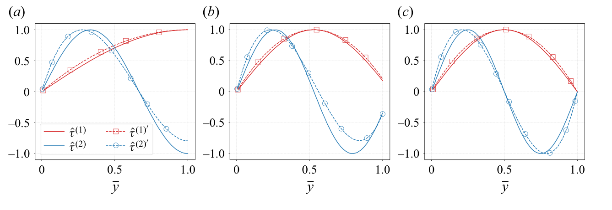
Figure 2｜热场闭合为什么不只用线性温度（第 13 页）
- 回答的问题： 少量壁法向温度形状能否近似真实热弛豫模式？
- 图中证据或方法： 比较前两个热特征函数与多项式近似，分别取 H/K=10⁻³、16、10⁵；曲线按各自最大绝对值归一化。红色为第一模态，蓝色为第二模态。
- 支撑的结论： 第一模态及大 H/K 条件下的第二模态形状得到较好再现，使表面温度可以有独立弛豫过程，而非瞬时从 h 求得。
- 局限与读图注意： 小 H/K 下第二模态的端部偏差明显。归一化曲线吻合仅检验形状，不直接证明温度振幅、相位或热流准确；强瞬变与高阶热模态仍可能超出该闭合。
对于忽略对流的热弛豫子问题，特征函数为 sin(lȳ)，特征值为 −l²/(PrH²)，l 满足 l cot(l)+H/K=0（式 3.11–3.13）。负特征值意味着热扰动自行衰减，不是流动不稳定性的增长率。最慢两个衰减模式主导较长时间的剖面，因此用少量形状表达热记忆有物理依据；但这并不意味着强迫频率任意高时也足够。
动量和能量方程保留了什么
附录 B 的长表达式可以按物理作用阅读，不必先背全部系数：
| 方程中的项 | 主要作用 |
|---|---|
| −5q/(2h²) 与流向重力项 5Re·h/6 | 壁面黏性阻力与重力供给；平膜平衡给出 qx=Re·h³/3 |
| 以 Γ 乘 h 的三阶膜厚导数 | 毛细压力梯度，抑制短波形变 |
| −(5/6)Ct·h∇h | 法向重力导致的静压输运；悬垂时符号反转 |
| −(5/2)Vr·hJ∇J | 非均匀蒸汽反冲压力引起的平面内输运 |
| −5Ma∇θs/(2Pr) | 热毛细界面剪切；按水的负 dσ/dT，对应由热处趋向冷处的表面牵引 |
| q 的对流、两个方向的交叉项及相变相关项 | 惯性和展向输运；质量增减同时改变动量平衡 |
| 热弛豫、对流及壁温的时间/空间导数 | 由基底加热引发的温度响应、热输运和相位滞后 |
所谓“简化二阶”很重要：惯性保留到 O(ε)，其余指定项保留到 O(ε²)，并非所有物理贡献都保留到完整二阶。附录 B.1 明列被舍弃的二阶惯性/对流修正。强惯性、短波或近干涸时，这些被省略项不一定还小。
线性稳定性：区分增长率、波速与平均变薄
扰动取 exp[i(kxx+kzz−ωt)]，ω=ωr+iωi。ωi>0 表示相对指定基态的微小扰动增长；波速 c=ωr/|k|；截止波数 kc 是增长率为零的位置。三者都不同于平均膜厚因相变而变化，也不同于某时刻照片上波纹的绝对幅值。
本文把缓慢相变平膜作为瞬时基态，再分析小扰动，并沿既有处理略去线性运动学条件中部分 E 项。因此这些谱是指定近似下的时间局部稳定性信息；它们不是整个非平稳干涸过程的有限时间增益，更不是受迫系统的 Hopf 分岔证明。
长波增长率把各机制放在同一账本
由式 4.2c 和 Γ 的长波重标度，可把低波数增长率写成便于解释的形式：
ωi ≈ |k|²{ −CtH³/3 + (2/15)H⁶Re²cos²φ + η²H³Vr/(H+K)³ + ηH²KMa/[Pr(H+K)²] } − ΓH³|k|⁴。
其中 cosφ=kx/|k|。这是一条长波近似表达式，不是拿来替代全部 WIBL 或 Orr–Sommerfeld 计算的全波数公式。
- 静压项在向下流动膜中可稳定，在悬垂膜中可失稳。
- 惯性项偏好流向扰动，且随 H 的六次方增强，因此凝结增厚会明显提高惯性作用。
- 蒸汽反冲项因含 η²，在两种相变方向中都为失稳贡献。
- 热毛细项随 η 改符号：在本文平膜与纯蒸汽闭合下，蒸发时增强扰动，凝结时抑制扰动。
- 毛细项为负四阶波数项，限制高波数增长。
这解释了看似矛盾的两句话为何能同时成立：凝结的热毛细贡献可以稳定，但凝结增厚带来的惯性增强又可使整个系统更不稳定。 判断总稳定性不能只看某一个机制名称。
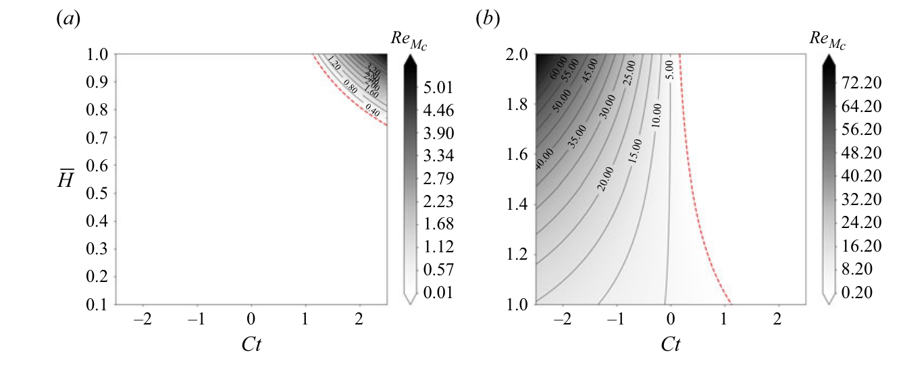
Figure 3｜稳定阈值取决于厚度和悬挂方向（第 22 页）
- 回答的问题： 何时存在正的临界 Marangoni–Reynolds 数，使热毛细作用与反冲、静压达到临界平衡？
- 图中证据或方法： 在 Vr=0.5 下画出 ReMc 随 H、Ct 的变化，左图蒸发，右图凝结；红虚线划分临界值正负的区域。
- 支撑的结论： 蒸发与凝结的可达临界区域显著不同。凝结的稳定热毛细作用可以与悬垂膜的失稳静压、反冲竞争。
- 局限与读图注意： 灰度显示的是临界参数值，不是实际增长率；空白也不能直接解读成“所有工况稳定”。需带入实际 ReM 并检查不等式方向。这里是长波解析阈值。
与完整线性方程比较
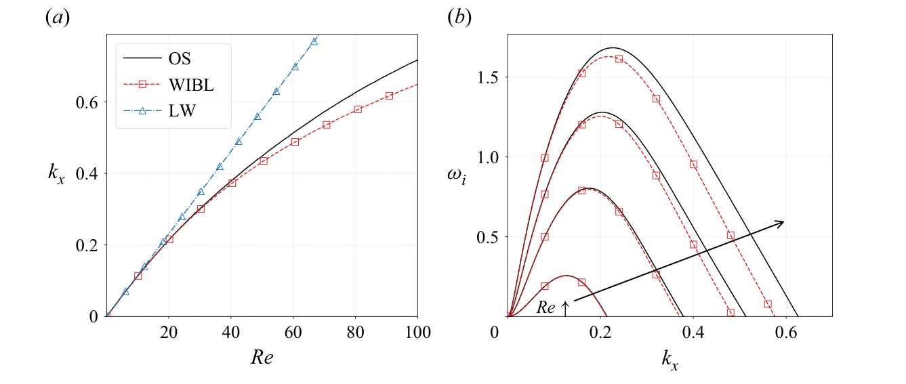
Figure 4｜先验证没有热效应的流体力学骨架（第 23 页）
- 回答的问题： WIBL 在纯流动问题上是否比最低阶长波近似更可靠？
- 图中证据或方法： 左图比较截止波数随 Re 的变化；右图比较 Re=20、40、60、80 的增长率谱。黑线为 OS，红线为 WIBL，蓝线为 LW，取垂直膜、Γ=1000、H=1。
- 支撑的结论： Re 增大后，LW 的截止波数偏高明显；WIBL 更接近 OS，并能给出最不稳定波数附近的峰形，但高 Re 时逐渐低估增长峰与截止波数。
- 局限与读图注意： 这是线性等温算例，不直接检验热模型；“比 LW 好”并不表示 Re 达到 80–100 后仍精确，更不能据此保证强非线性破裂预测。
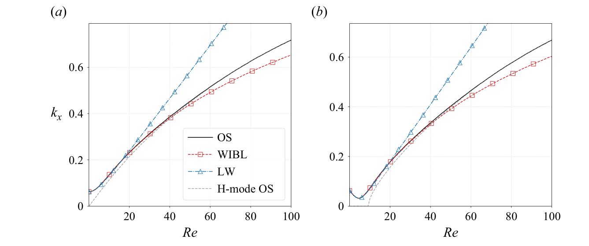
Figure 5｜相变效应在低 Re 时更突出（第 24 页）
- 回答的问题： 热毛细和蒸汽反冲会怎样移动稳定边界？
- 图中证据或方法： Ma=10、Vr=4，比较两种倾角下的中性曲线，并加入无热毛细/反冲的灰色 H-mode 参照。
- 支撑的结论： 低 Re 的边界受相变相关作用显著影响；较高 Re 下惯性占优，OS 曲线更接近纯流体力学参照。WIBL 的中性边界在所示中等 Re 范围优于 LW。
- 局限与读图注意： 图注写右图 β=15°，相邻正文却写 π/6=30°，两处不一致。此处只使用其趋势，不把右图作为精确倾角复现数据；原文“误差小于0.05”也不应无依据改写为“相对误差5%”。
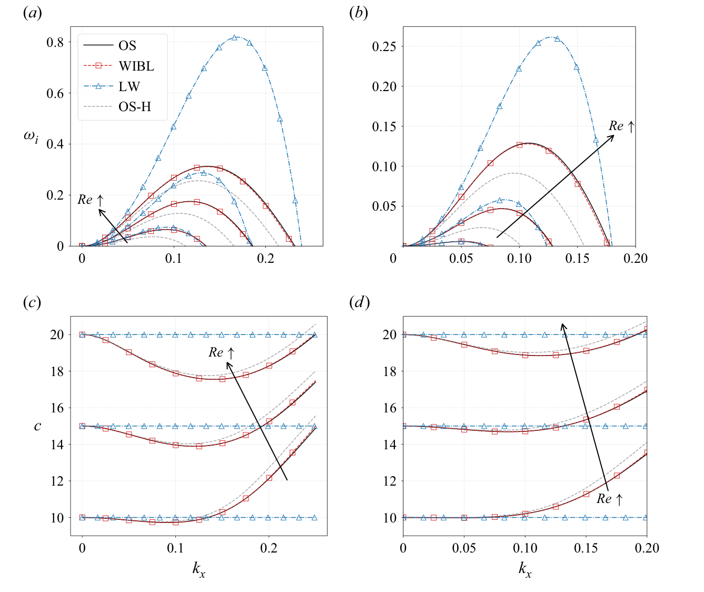
Figure 6｜边界接近，不等于增长速度接近（第 25 页）
- 回答的问题： 即使中性曲线相近，模型是否会把扰动放大得过快，或让波传播得不对？
- 图中证据或方法： 上排为增长率，下排为波速；Re=10、15、20，左列 β=90°，右列 β=30°，Ma=10、Vr=4、H=1。
- 支撑的结论： LW 可明显高估增长峰，并只能在 k→0 附近描述波速；WIBL 的峰值、峰位及波速的非单调形状与 OS 更一致。
- 局限与读图注意： 不要仅用截止波数一致宣布模型已验证。非线性初始阶段对增长率和相位速度都敏感；这仍是指定基态的小扰动验证。
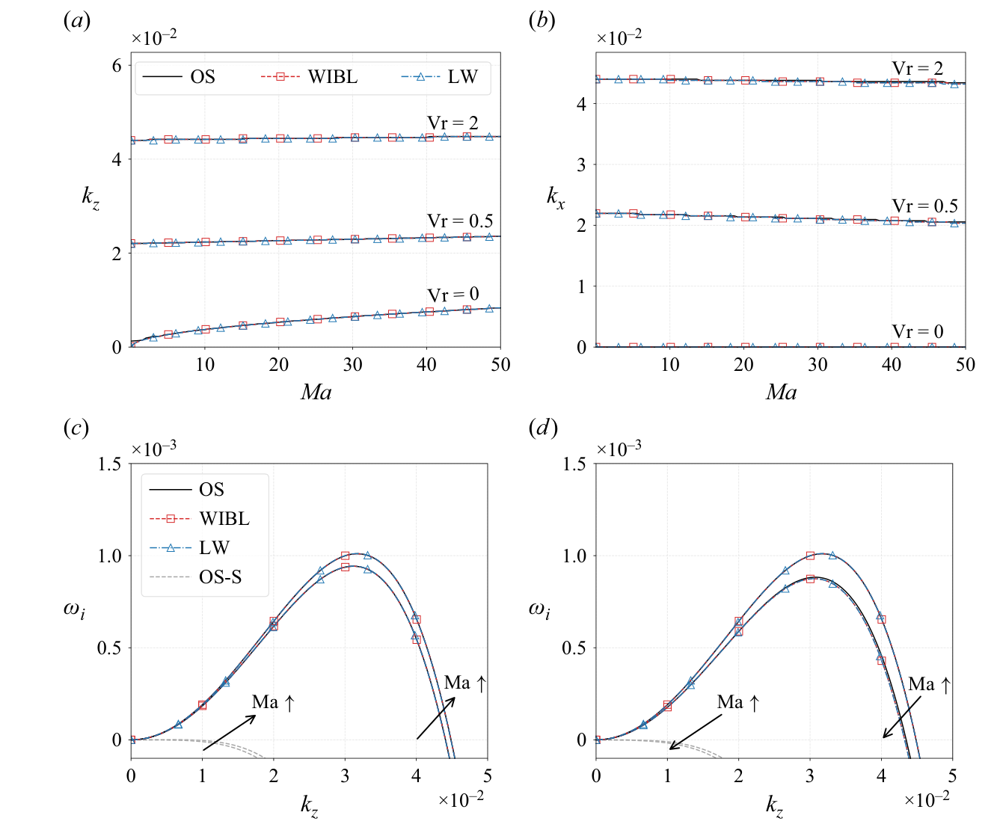
Figure 7｜热毛细项随相变方向改符号（第 26 页）
- 回答的问题： 不沿主流方向传播的扰动，主要由什么驱动？
- 图中证据或方法： Re=0.1、β=90°，上排为中性曲线，下排为增长率；左列蒸发、右列凝结，比较不同 Ma 和 Vr。
- 支撑的结论： 增大 Vr 增强展向失稳；增大 Ma 在蒸发侧扩大失稳范围，在凝结侧起稳定作用。小波数条件下三种方法非常接近。
- 局限与读图注意： 右上图纵轴印作 kx，但图注、其余分面和讨论均为展向波数 kz，应视为标注待核对。此处 Re 与流向比较图不同，不能把跨图增长率之比直接当成同一工况的机制强弱比。
基态在变：同样的温度机制不一定带来同样的总趋势
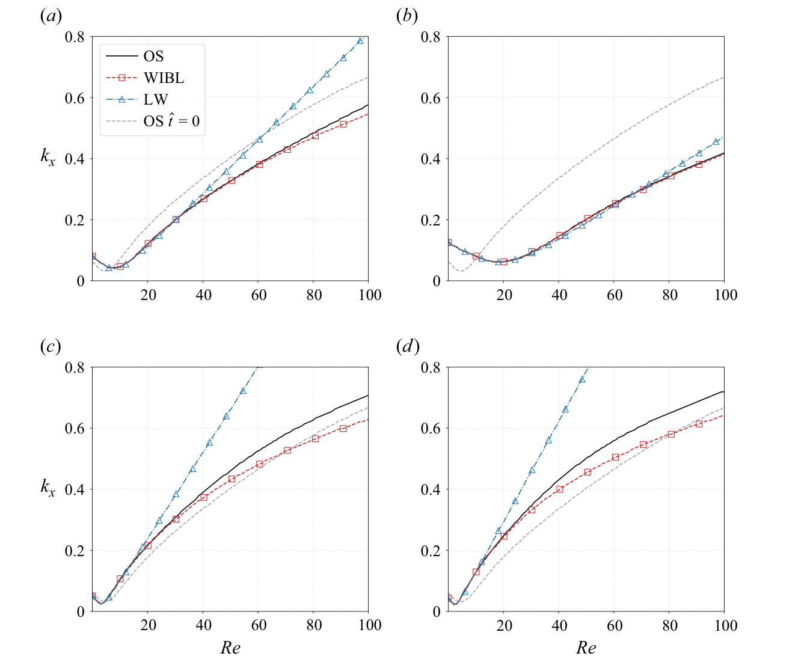
Figure 8｜不能把初始谱用到整个蒸发过程（第 27 页）
- 回答的问题： 相变缓慢改变平均膜厚后，流向不稳定波数区间如何变化？
- 图中证据或方法： 上排蒸发、下排凝结；左列较早时刻、右列较晚时刻，以初始中性曲线为灰色参照。参数包括 β=15°、Ma=10、Vr=4。
- 支撑的结论： 蒸发变薄减弱惯性主导的流向放大，使主要不稳定波数范围收缩；凝结增厚则反向变化，并增加高 Re 时 WIBL 与 OS 的偏离。
- 局限与读图注意： 图中时间按参考耗尽时间归一，凝结并不因此真的具有蒸发耗尽时刻。它是一组随基态厚度变化的谱，不是追踪同一个扰动的真实有限时间增益。
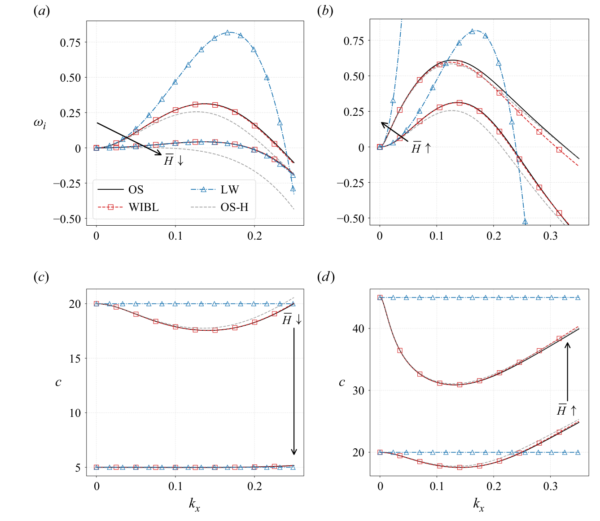
Figure 9｜厚度作用不能压缩成“蒸发更不稳定”（第 28 页）
- 回答的问题： 膜厚改变时，波动增长和传播速度分别如何响应？
- 图中证据或方法： 左列蒸发，H 从 1 减到 0.5；右列凝结，H 从 1 增到 1.5。上排为增长率，下排为波速，Re=20、β=15°。
- 支撑的结论： 这些工况中增厚提高流向增长率和波速，变薄则降低；WIBL 对这些趋势的捕捉优于 LW，尤其是波速随波数的形状。
- 局限与读图注意： 强弱取决于比较的是流向还是展向、固定的尺度是什么；不能从这张图推出所有蒸发膜都更稳定。原图注把凝结分面写作(b,c)，按图中位置应为(b,d)。
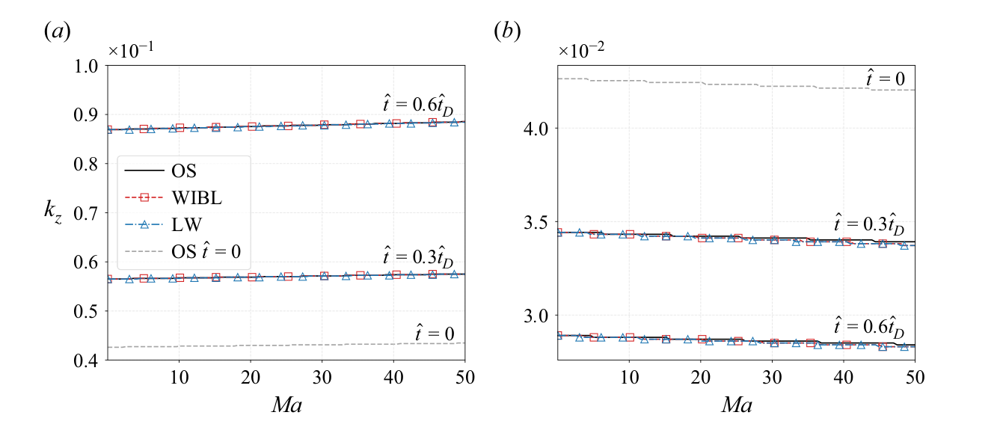
Figure 10｜展向趋势与流向趋势可以相反（第 29 页）
- 回答的问题： 在低惯性的纯展向问题中，变薄和增厚如何改变热相关失稳？
- 图中证据或方法： Re=0.1，左图蒸发、右图凝结，比较初始及两个较晚基态的展向中性曲线。
- 支撑的结论： 蒸发侧截止波数随变薄而提高，即更多较短展向波长进入不稳定区；凝结侧则缩小。这与图 8 的流向结果说明，不同方向的主导机制不同。
- 局限与读图注意： 两面纵轴量级不同，必须看乘数；不要只比较图线的屏幕高度。这里的 LW/WIBL/OS 一致性依赖小波数和低 Re。
悬垂膜的主导方向切换
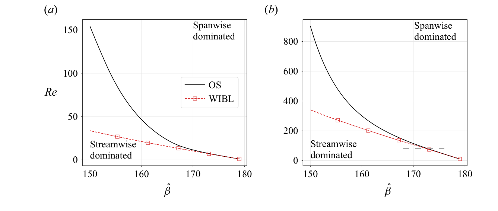
Figure 11｜“二维最危险”不是自动成立（第 30 页）
- 回答的问题： 什么时候最大增长率不再属于流向扰动？
- 图中证据或方法： 使用表 6 的两组参数，扫描倾角 β 与 Re，黑线为 OS，红线为 WIBL；曲线两侧分别标为流向与展向主导。
- 支撑的结论： 接近水平倒挂的薄膜可以由展向 Rayleigh–Taylor 型增长压过流向 Kapitza 型增长。WIBL 在低 Re 的阈值附近较接近 OS。
- 局限与读图注意： 图上大 Re 分支的红黑差距很大，不能把整个阈值图都称为准确。β→180° 是接近水平倒挂，不是接近垂直；正文个别方向措辞不应照搬。
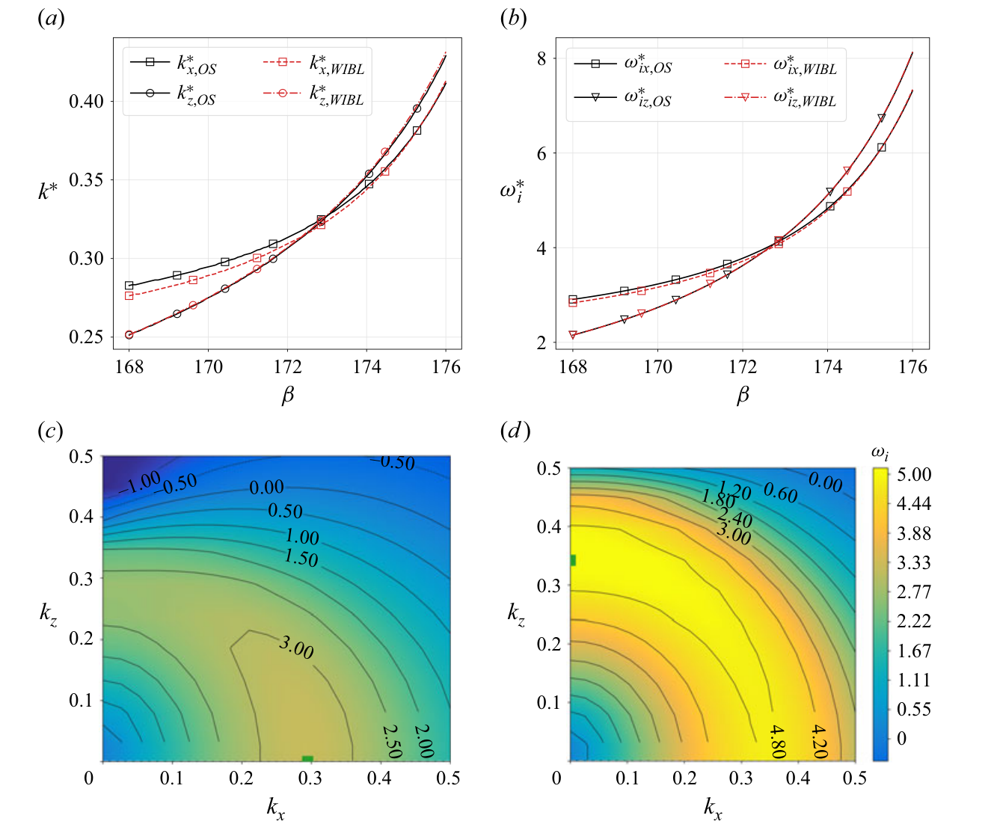
Figure 12｜真正决定“最危险方向”的是整个谱面（第 31 页）
- 回答的问题： 主导方向切换只是两条曲线相交，还是二维波数平面的最大值真的移动？
- 图中证据或方法： 上排比较各方向最危险波数及其增长率；下排给出 β=170° 与 174° 的 ωi(kx,kz)，绿色方点标全局最大值。此例 Re=80。
- 支撑的结论： 随 β 增大，展向最大增长率超过流向分支，谱面的最大值从近流向轴移到近展向轴，支持机制竞争导致方向切换的解释。
- 局限与读图注意： 图(d)最大值靠近 kx=0；正文末段一处写 kx≠0 与图、表 6 的“近纯展向”不一致。这里仍是模型特征值结果，不是已观测到的三维实验波形或普遍定理。
二维非线性验证：精度与速度的证据边界
非线性比较采用水、饱和温度 300 K、倾角 15°、E=0.01、Re=15。参考膜厚约 162.7 μm。二维计算域长 60，周期边界，从平膜及饱和温度出发，在基底施加平滑启动的行进正弦温度，计算到慢时间 T=100。表 4 的参数与若干公式存在需要复核的地方，见后面的“复现前检查”。
WIBL 用 Fourier 伪谱空间离散，200 个网格节点；三维对应每方向 200 点。时间推进使用自适应 Runge–Kutta 5(4)，附录 C 说明非线性项在物理空间计算、FFT 回变换，并用 2/3 规则减轻混叠。完整二维方程在 COMSOL 中用 ALE 动网格求解，作者报告 16,574 单元、近壁和界面各设置边界层网格，以及 BDF 时间推进、相对容差 10⁻⁴。
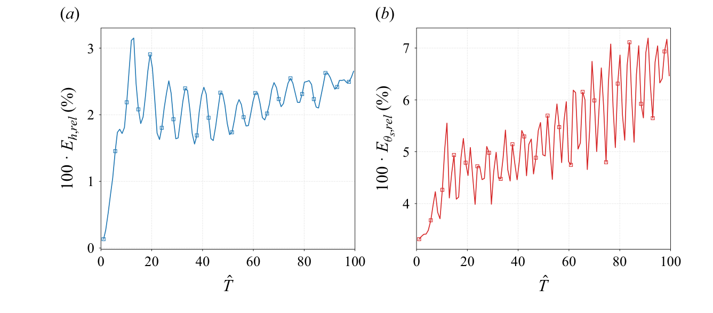
Figure 13｜“大约几个百分点”具体指什么（第 32 页）
- 回答的问题： 动态加热时，降阶模型对膜厚和表面温度究竟偏差多大？
- 图中证据或方法： 对同一算例，按式 3.29 对整个周期域计算相对空间范数误差。左图膜厚，右图表面温度，纵轴已乘 100 表示百分数。
- 支撑的结论： 多数时刻膜厚误差约为 2% 左右至约 2.5%，启动峰略超过 3%；温度误差约为几个百分点，后期接近并略超过 7%。这支持“该二维算例具有实用的近似精度”。
- 局限与读图注意： 这不是逐点最大误差、不是实验误差，也不是全参数域保证。原文“低于3%/7%”与图的尖峰不完全一致，因此此处用“约”。温度基准接近零时，相对范数指标还会受归一化影响。
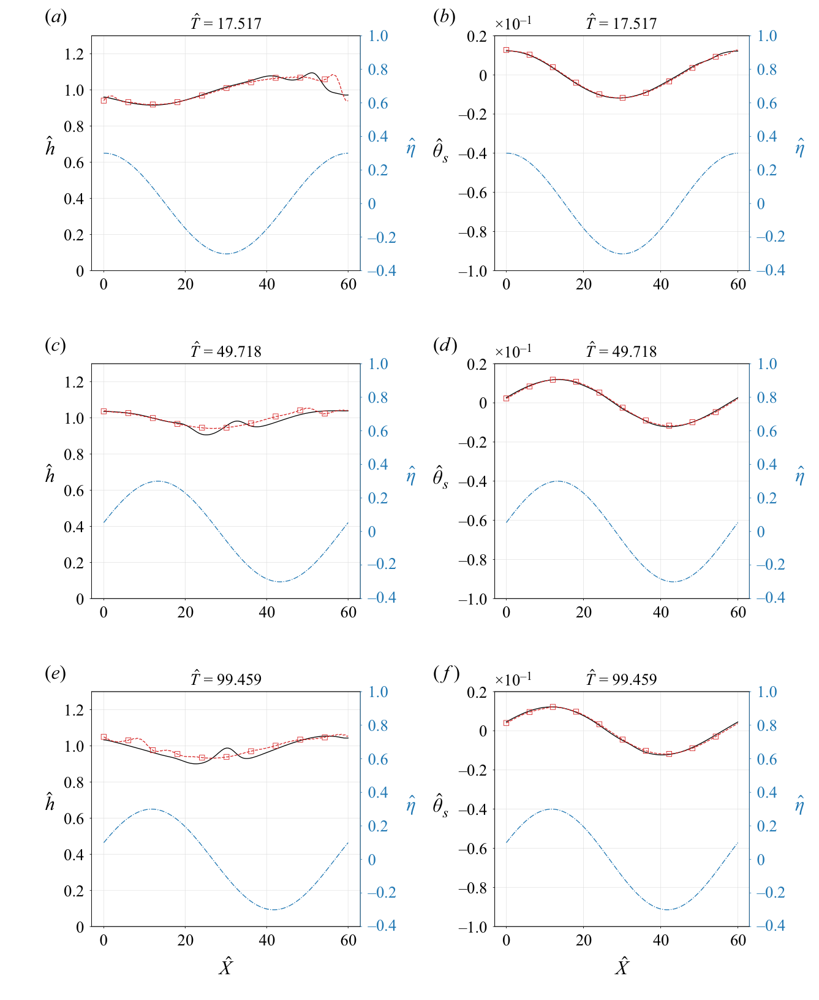
Figure 14｜哪里吻合，哪里开始漏掉细节（第 34 页）
- 回答的问题： 总误差背后，是整体形状错误，还是小尺度相位/幅值误差？
- 图中证据或方法： 三个时刻分别比较膜厚和表面温度；黑线为完整方程、红线为 WIBL，蓝色点划线和右轴是外加基底温度。
- 支撑的结论： 长尺度温度与膜厚起伏总体吻合；局部短波出现相位偏移和幅值/阻尼偏差，符合长波模型漏失较短尺度的预期。
- 局限与读图注意： 温度左轴另有 10⁻¹ 量级因子；不能把基底温度的右轴误当表面温度。图注称外加温度曲线为绿色，但实际图是蓝色，应按图例/坐标识别。
作者报告这一二维比较中，WIBL 的 CPU 用时不到 1 分钟，COMSOL 超过 10 小时。它证明此算例、此实现和作者计算资源下降阶模型有明显成本优势；它不是经过同硬件、同误差目标系统评测的通用加速比，也不证明可以用 WIBL 替代所有三维直接模拟。
三维演示：为何凝结也可能出现局部“干涸”迹象
三维模拟只用 WIBL，没有三维完整方程对照。周期域为 60×60，初始膜厚为 1 加上一个峰高 0.1 的局域高斯扰动。作者比较等温、恒温蒸发、恒温凝结、仅随时间振荡的壁温、时空行进温度五种情形。监测量是最小膜厚 hmin 与域平均界面质量通量 ⟨J⟩，二者回答的是不同问题：前者看局部最危险处，后者看整体加/失质量。
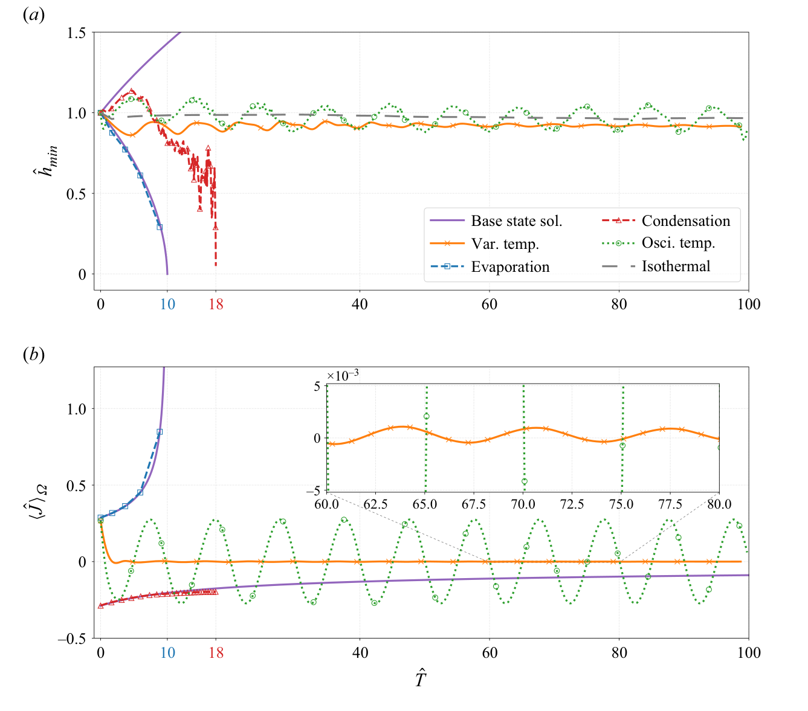
Figure 15｜平均增质量不能排除局部变薄（第 35 页）
- 回答的问题： 相变方向和壁温时序会怎样改变局部薄区及整体相变？
- 图中证据或方法： 恒蒸发蓝线的最小膜厚在慢时间约 10 降到零附近；恒凝结红线先增厚，后出现下降包络和强起伏，在约 18 附近结束；振荡或行进壁温的曲线在所示 T≤100 内保持正厚度。下图同时显示平均相变通量。
- 支撑的结论： 降阶模型中，凝结增厚强化惯性波动，可通过横向输运产生局部薄区；正负交替的壁温协议则维持较温和的最小厚度和平均通量。
- 局限与读图注意： 凝结曲线末端伴随陡梯度和 WIBL 解的 blow-up，不能据此声称已准确解析真实膜破裂。振荡协议均值近零，而恒蒸发协议持续加热，二者热负荷并不等价；图不能证明“同净热负荷下控制提升了干涸极限”。
“干涸”在这部分应更谨慎地理解：恒蒸发情形接近平膜耗尽，是总体损失液体；恒凝结情形却是总量增加时，波动和输运把某些位置抽薄，并进入降阶模型失效/数值发散附近。总体平均厚度、最小厚度、波动幅值以及模型是否保持适用，必须分别记录。
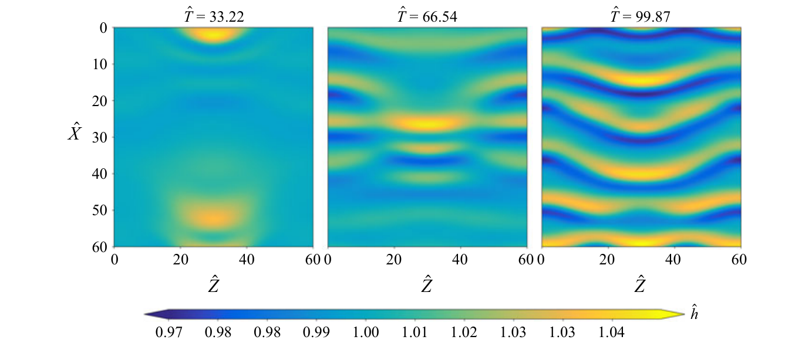
Figure 16｜不用热强迫也会形成行波结构（第 36 页）
- 回答的问题： 初始局域隆起在纯流体力学条件下会形成什么背景波形？
- 图中证据或方法： 三个时刻的膜厚色图，色标约 0.97–1.04。最初的局域隆起逐渐发展为流向变化明显、跨展向延展的弯曲波峰。
- 支撑的结论： 等温基准中的波动较温和，为判断热强迫是否改变波形与局部厚度提供参照。
- 局限与读图注意： 横轴是展向 Z，纵轴是流向 X；“流向主导”指扰动波矢/变化方向，不是把图上亮带的几何延伸方向直接当传播方向。色标范围很窄，视觉强烈的颜色反差不代表膜厚变化很大。
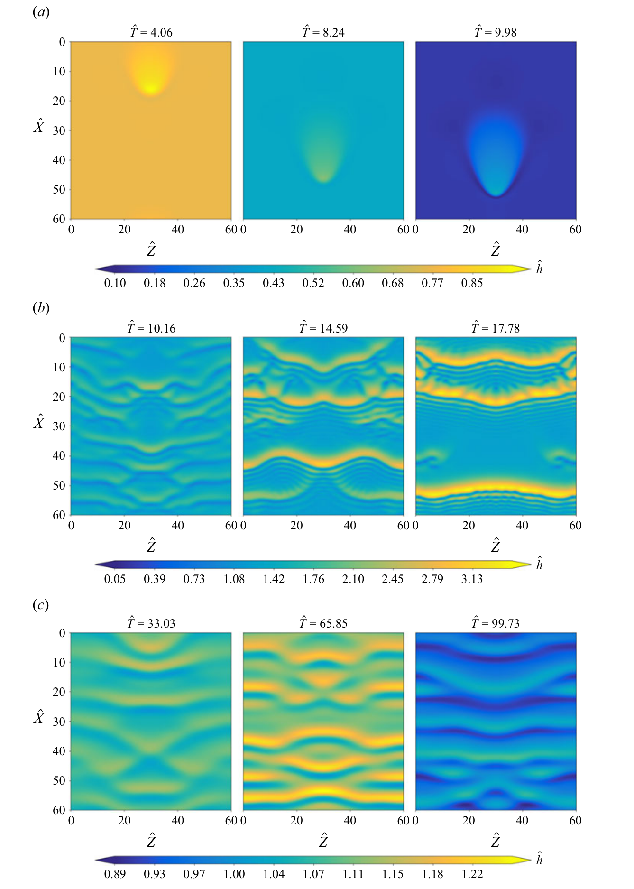
Figure 17｜不同过程产生不同的薄区与波形（第 37 页）
- 回答的问题： 图 15 的三类曲线各自对应怎样的空间结构？
- 图中证据或方法： (a)恒蒸发、(b)恒凝结、(c)时间振荡，各有三个时刻；每一行使用独立色标与时间序列。
- 支撑的结论： 蒸发行显示整体变薄和局域剩余隆起；凝结行显示更强波峰、前导短波及极薄区；时间振荡行保持较温和、类似等温背景的波列。
- 局限与读图注意： 三行色标差别很大：凝结范围约 0.05–3.13，而时间振荡约 0.89–1.22。不能直接用颜色浓淡比较振幅。凝结末期短波、陡坡正是长波近似最脆弱的区域，不能当成已验证的真实破裂形态。
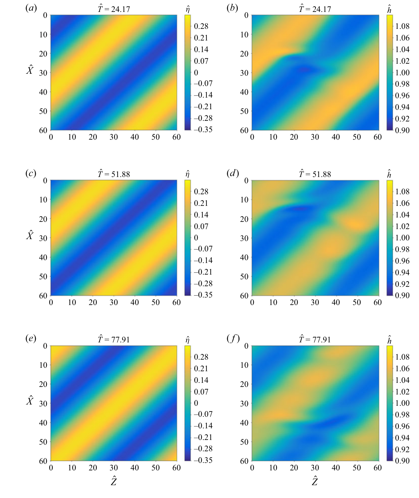
Figure 18｜外部温度波可以重排波形（第 38 页）
- 回答的问题： 温度不仅在时间上振荡，而在平面内传播，会不会引导膜厚结构？
- 图中证据或方法： 左列是三时刻的基底温度，右列是对应膜厚；温度呈斜向条纹，膜厚结构逐渐呈相应的大尺度方向性。
- 支撑的结论： 在本文模型和参数下，时空热强迫能改变波形与局部质量输运；后期厚度起伏与外加温度波呈一定锁定关系。
- 局限与读图注意： 左右列色标分别是温度和厚度，不能比较数值或颜色幅值。视觉相似并不独立分离热毛细、反冲与局部相变的贡献；若要提出因果机制，需要关项或等热负荷对照。也不能由几个时刻推断永久稳定。
随文附录到底补充了什么
- 附录 A（第 39–40 页）：将原方程换到慢变量，保留至指定二阶，写出边界层守恒式及界面条件，再沿厚度求压力。价值在于检查何种空间导数被保留，而不是把“二阶”泛化成全物理高精度。
- 附录 B.1（第 41–42 页）：给出一阶速度、温度修正的边值问题，以及被明确舍去的二阶惯性项。它是判断强惯性失效来源的直接依据。
- 附录 B.2（第 42–44 页）：展开两条流量方程和热方程各物理贡献。可按重力、黏性、毛细、反冲、热毛细、对流和热扩散分类，便于未来做项预算或受控关闭测试。
- 附录 C（第 44–45 页）：给出二维平面 Fourier 伪谱与时步求解方法，说明非线性乘积和 2/3 去混叠。这里的“3D”是膜面在 X、Z 两个方向变化，再由闭合重建厚度方向结构；不是三维体网格直接求解。
复现前检查：原文存在若干不能无条件照抄之处
这些问题不自动推翻论文的全部结果，但意味着它更适合作为建模框架与验证思路来源，而不是未经校对就转成代码的公式表。
- 气相传质机制的措辞冲突。 正文第 3、5 页明确采用纯蒸汽环境中的动力学相变闭合，并解释为何不以空气侧扩散为主；表 3 却出现“diffusion-limited vapour transport”的表述。应以实际 J=ζ(Tfs−Ts) 的模型结构为准，不能拿这个表句把本文归为扩散控制气相模型。
- 热模态极限的式 3.14 需核对。 从式 3.13 的 l cot(l)+H/K=0 可直接看出，H/K→0 时非零根接近半整数倍 π；H/K→∞ 时接近整数倍 π。印刷的式 3.14 将两种极限的归属写反。图 2 的形状也更符合边界条件本身。这里指出代数一致性问题，不替作者宣称其实际程序使用了哪一版本。
- 热毛细方向不能跟着单句文字走。 第 20 页有“由冷到热”的措辞，但本文水的表面张力随温度降低、附录 B 的热毛细项为负温度梯度牵引。报告采用热处低表面张力、冷处高表面张力的常见物理方向，并用增长率式的符号判断蒸发/凝结稳定作用；复现时还需统一原文 σ 温度系数的正负约定。
- 参数表与公式需要重新代入核算。 表 4 印出的 Ma=7.75×10⁻⁴ 与表内水物性、膜厚、温差和式 2.12 的组合并不显然相容；若用表列 SI 量直接代入，所得 Ma 为约 3.2×10³ 的量级。这里仅作单位/定义一致性警示，不能据此擅改作者数据或断言图用错了参数；还须查原始代码、是否有额外重标度或勘误。
- 图与文字应交叉阅读。 图 5 倾角、图 7(b)波数轴、图 9分面指向、图 12最大值方向存在前述不一致；图 13的尖峰也提示“约3%/7%”比严格上界更贴切。
局限与结论边界
| 可以从本文得到的结论 | 不能从本文直接推出的结论 |
|---|---|
| 动态流量和热场闭合改善指定工况下的线性谱预测 | 任意 Re、波长和热强迫下都适用 |
| 二维非线性测试与同闭合完整液相方程相差约几个百分点 | 三维也具有相同误差上界，或实验误差同样小 |
| 悬垂膜中可发生流向/展向最危险模式切换 | 用户当前装置已发生同样的机制切换 |
| 凝结时局部最小厚度可以下降并进入模型失效附近 | 已经证明真实凝结液膜的精确破裂时刻和形貌 |
| 零均值时空温度强迫在所示有限时间内维持正膜厚 | 同热负荷下提高了最大散热能力，或永远不干涸 |
| 本文给出受迫波形和稳定性分析 | 已证明自激振荡、Hopf 分岔或多组分溶质 Marangoni 机制 |
此外，本文没有组分输运方程，不能描述不同挥发性组分造成的浓度梯度与表面张力变化。热物性温度依赖、非凝结气体、气相对流扩散、界面污染、接触线、分离压及真正破裂/拓扑变化，也不在当前模型的完整处理范围中。